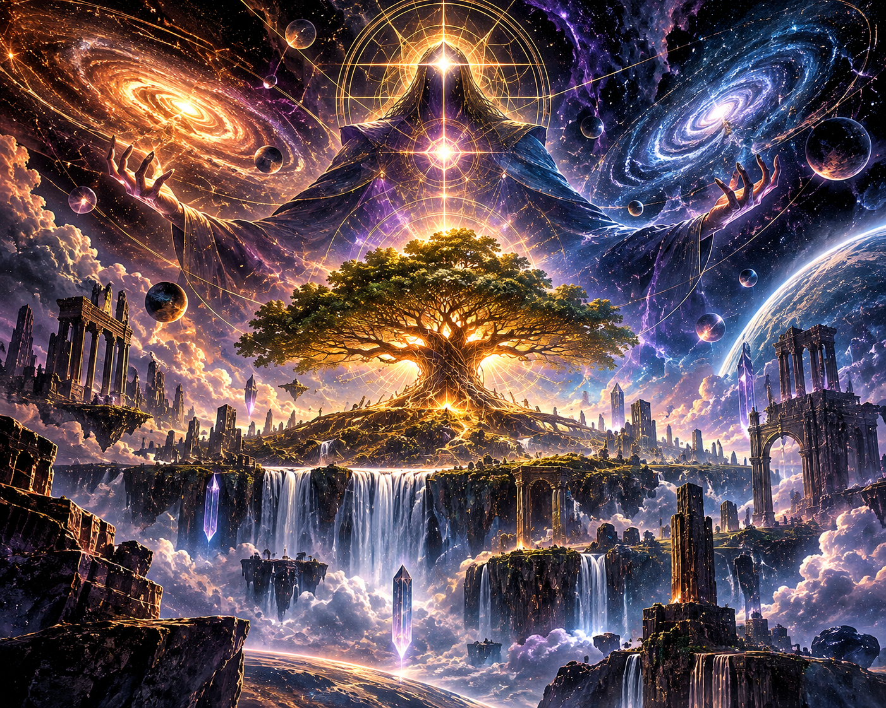

BOOK NEGATIVE ZERO : part I

MAKURABA
BOOK NEGATIVE ZERO
In the beginning, there was garden and so much of that was the toils of the creator bred into being and born to lust for creation in the beginning, darkness ruled the skies and waters. Everything was pure pure potential beyond void, so primitive, it was not even nothing, but that even in the most distant beginning, without point shape or even sound without law of reason.
There was no form nor a distinction of what it was to be or not there was yet to be an is ness, or any measure of what a thing could be, but rather infinite potentials of only what was not and could not so deep and endless, what was not folded in itself, nothing to nothing.
To an endless depth before ever distinction was made, the distinctions of what could be distinguished, had to be built by the universal semantics of something so things measure against things, fixing orders and laws, then dawn to be spoken in the forgotten tongue. AKASHIRUNIK, the language of the Tetragrammaton, the first architect of the universe before God, in a sense, the Tetragrammaton knew the language for it was the language, it was the stretch and breath of words, sung, and their vibrations echoed, the architect found the dimension of the naught, and by his awesome words etched the meaning of echoes and called them time.
So time was, and that was the first agreeable operator these operators were the spoken movements and phases carried by the choir, the elohim, a MAKURABA, these stars were cast to fix the nature of predistinction, where the magnitudes of the word were fixed, where maximized potentials and losses are constructed and reality is given its governing and ruling depths. And so these aggregate operators were what the one observer spoke, and they illuminated, what could be, by the words, the creator sung.